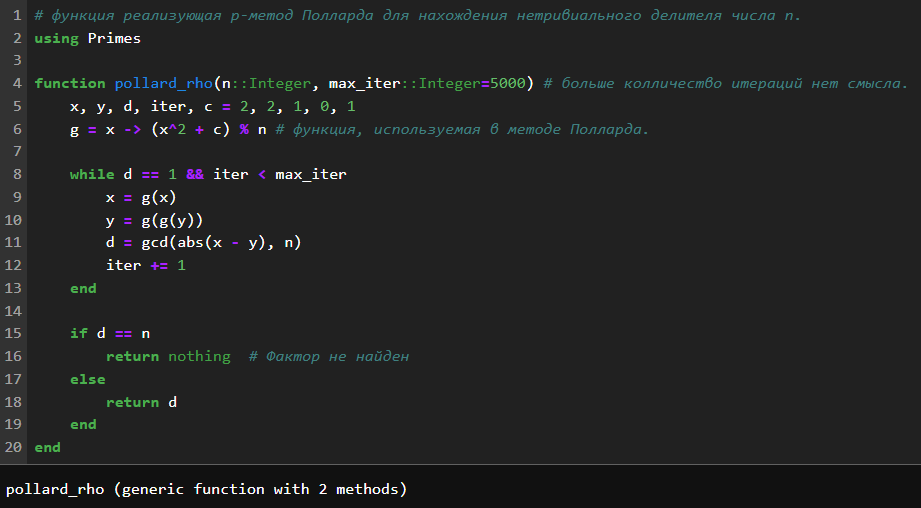
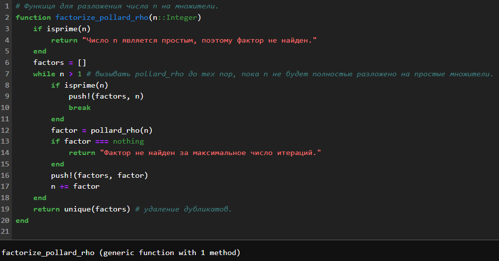
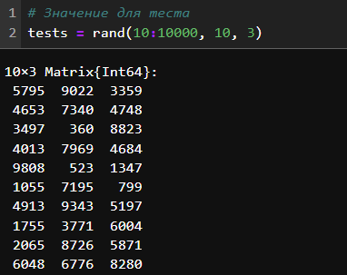
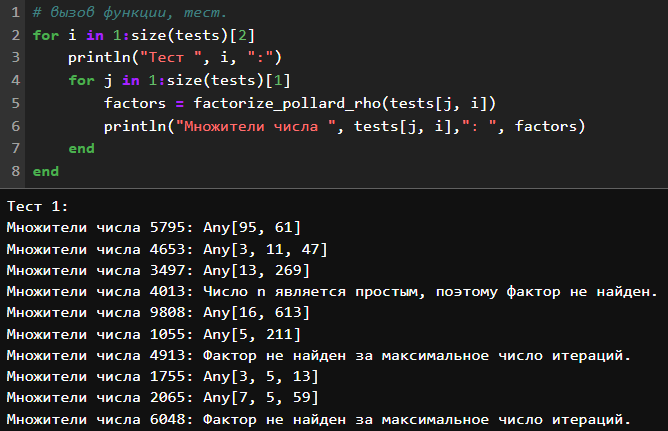
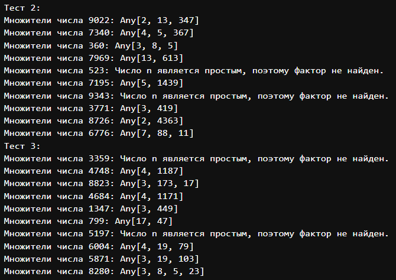

Метод
разложения числа на множители: p-метод Полларда
p-метод Полларда (метод ρ-Полларда) — это вероятностный алгоритм
факторизации целых чисел, который находит нетривиальный делитель числа
n за время, пропорциональное
$\sqrt[4]{n}$.
Алгоритм основан на поиске цикла в псевдослучайной последовательности
чисел, получаемой с помощью некоторой функции f(x), примененной к числу
x по модулю n.
Алгоритм:
Выбираем начальное значение x0 и функцию f(x), например, f(x) = x2 + 1.
Строим две последовательности чисел:
xi —
последовательность, получаемая итеративным применением функции f(x): xi + 1 = f(xi) mod n.
yi —
последовательность, получаемая с задержкой: yi + 1 = f(f(yi)) mod n.
Вычисляем наибольший общий делитель НОД(|xi − yi|, n)
на каждом шаге.
Если НОД ≠ 1 и НОД ≠ n, то мы нашли нетривиальный
делитель n.
Если НОД = n, то алгоритм
завершился неудачно, и нужно выбрать другое начальное значение x0 или функцию f(x).
Особенности:
Эффективность: В среднем алгоритм работает за время
O(n1/4),
что значительно быстрее полного перебора делителей.
Вероятностный: Алгоритм не гарантирует нахождение
делителя, и в худшем случае может работать долго.
Простота реализации: Алгоритм легко реализуется и
требует небольшого объема памяти.
Применимость: Метод хорошо подходит для
факторизации чисел среднего размера (до 100 десятичных цифр).
Пример:
Рассмотрим число n = 8051.
Выбираем x0 = 2
и f(x) = x2 + 1.
Строим последовательности:
x1 = f(2) = 5
y1 = f(f(2)) = 26
Вычисляем НОД(|5 − 26|, 8051) = 97.
97 — нетривиальный делитель 8051.
Заключение:
P-метод Полларда — это эффективный и простой в реализации алгоритм
факторизации, который широко используется в криптографии и других
областях.
Ход работы
Функция p-метод Полларда

Функция p-метод Полларда и библиотека для
простых чисел
Функция разложения и
проверки числа n

Функция разложения и проверки числа
n
Результаты

Тестовые значения

Вызов функции и тестовая группа
1

тестовая группа 2 и тестовая группа
3
Выводы по проделанной работе
Вывод
В ходе выполнения лабораторной работы я изучил способ нахождение всех
множителей числа алгоритмом реализующим p-метод Полларда.